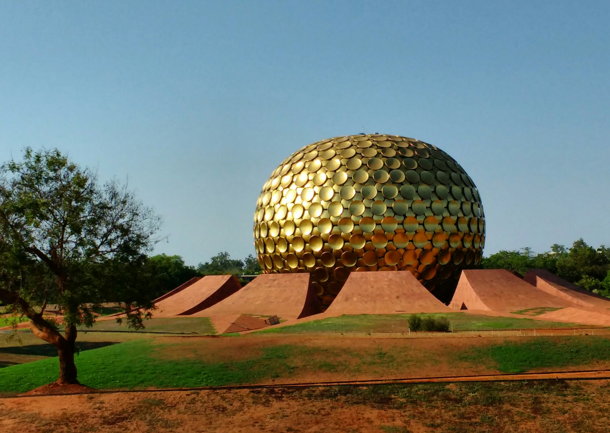
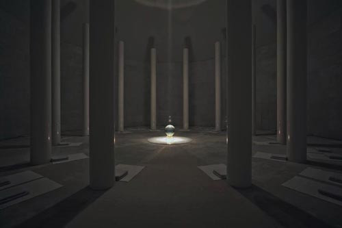

Chapter 2: The City of Dawn
May 11, 2016
The silence weighs down on the room as a hundred white socks step across immaculate white carpet, forming a circle around the edges of the cavernous marble walls. Twelve pillars form a circle around the center. The soft rustle of clothing reverberates from the walls as we sit on the cushions lining the floor, facing inward. A single beam of sunlight comes from the top of the domed ceiling, shining straight down. Below, the light shines through a large crystal orb, resting on a small but ornate golden support. The orb captures the beam perfectly, along with the gaze of every pair of eyes in the room. Somehow, it seems to grow as we stare.
My journey so far has taken me down many unexpected paths, sometimes in search of answers to questions I didn't even know I had. I walk up the dusty road from the beach, passing small thatched huts with women setting their dishes to dry on a pile of concrete rubble. I hitch a ride on the back of a passing motorcycle and make my way towards Auroville, an experimental international township located just outside of Pondicherry in southeast India. Not until much later in the day do I realize I had never hitchhiked before. Less than a day later, I'm weaving through the chaos of Indian traffic on the seat of my own motorbike, learning how to ride in a place where helmets are as rare as beef products. This country has awoken a person in me that I'm still getting to know, a person who climbs mountains on a whim, plays games with children on the street, and isn't always sure what city he'll wake up in tomorrow.
“Man is not the summit of evolution,” says our guide, explaining the founding ideas of Auroville as we wait to enter the famous golden structure known as the Matrimandir. While the town has a strong spiritual focus, the man says these words and my mind goes to a place of science and technology. Evolution is not an inevitable advancement, but an adaptation to environmental and ecological change. So we can't really call anything the summit of evolution.
We may be the only species conscious of our own evolution, and with awareness comes the ability to choose. When we become aware of evolution, we begin to develop the means to influence and even control it. We can slowly eliminate that which threatens us: predators, disease, and eventually, aging. But just as our advancing technology allows us to rid the world of problems, it also creates potential for abuse. Sure, worldwide communication is astounding – instantaneous and nearly free – but with this convenience and connection can come the invasion of privacy by those with power.
The risks that come from advancement are scary sometimes, but even more terrifying would be a species that refuses to adapt. That would be like swimming through shark infested waters, seeing a nearby boat, and not getting into it because the seats might be uncomfortable. Society resists large scale change in the same way individuals are often afraid to push themselves for something greater, fearing the worst case scenarios.
Growth comes from choice, and choice comes from awareness. And nothing forces awareness better than being alone, without distraction, in the depths of your own mind. Inside the white interior of the Matrimandir, we sit in absolute silence for what may have been twenty minutes. Some meditate, others gaze at the orb as if in a trance. While the architecture feels like a combination of an ancient temple and an alien spacecraft, the Matrimandir is no place for religion. In fact, its creators prohibit all forms of open religious practice while inside. Instead, it is a place of concentration; a place to seek a higher understanding of oneself. Many people misunderstand meditation as a religious habit, but much like yoga it does not require any form of belief, and can be entirely secular. Both provide plenty of mental and physical benefits though, from improved concentration and memory to the elimination of anxiety and depression.
The Matrimandir and its accompanying Banyan tree mark the geographical center of Auroville – the City of Dawn. Beyond are the assorted parts of town, all constructed with sustainable architecture, drawing power from small wind turbines and a large field of solar panels. Founded in 1968 by a French woman referred to affectionately as The Mother, phrases like “Divine Consciousness” and “Universal Spirit” fill spaces on posters and informational art pieces around town. Terms like these usually throw up red flags for me and make me wonder if I'm looking at a cult, but Auroville pushes past the lofty phrases reminiscent of the drug-laden mantras of the late sixties, and seeks to find practical, real world applications of their ideals.
From their community outreach programs to their research in urban farming, Auroville blends cultural diversity with a wide range of occupations (from doctors and engineers to artists and farmers), and strives to be a force for good in the world. The difference, it seems to me, is that while anyone can have philosophical ideas about life and society, putting them into practice is another matter entirely, and Auroville pushes for that. The town is young and its fate unknown, but my time there makes me optimistic about its future.
Each day I return to my beach hut down the road. Due to the lack of tourism this time of year, my only neighbor is Krister, a retired sculptor from Stockholm, Sweden, who stays here a few months of each year. Throughout the week, we spend several evenings at the patio table in the company of the local dogs, cats, snakes, and other assorted wildlife, as we enjoy the sounds of waves crashing against the silence of the night. We exchange stories and talk about everything from culture shock and the meaning of ignorance, to the history of the Vikings in Europe.
I sit now in a cafe in the heart of Bangalore, reflecting on these past couple of weeks. I realize that I write for much the same reason that I speak: not merely to share stories and ideas, but to start conversations. An idea can only develop so far in the mind of one person, and requires others to challenge and add to it. If this piece has you thinking, please share your opinions or questions in the comment section (or directly with me, whatever suits you). Otherwise, consider sharing it with someone who might feel strongly about it.
~Drew